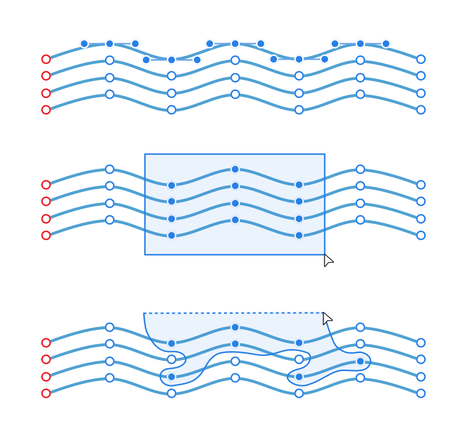
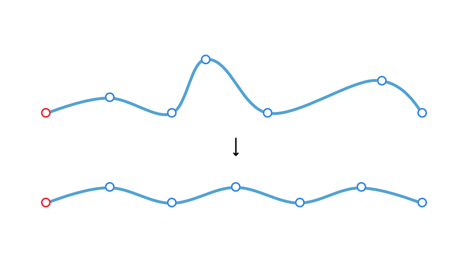

When editing curves or shapes you can select multiple nodes in different ways. With selection control, you can then align and distribute nodes as you would with multiple selected objects, as well as transform selected nodes.

Selecting node-by-node, by marquee and by lasso.

Aligning and distributing selected nodes. To select multiple nodes:
With the Node Tool and curve/shape selected, do one of the following:
Node-by-node selection: With the pressed, click individual nodes in turn.
Marquee selection: Drag a marquee selection area over nodes to include them in your selection.
Lasso selection: With the pressed, either:
Draw freehand around nodes to encompass them in the blue selection area.
Draw a polygonal area around nodes taking a click-by-click approach.
To align/distribute multiple nodes:
With the Node Tool and curve/shape selected, select one or more nodes on the curve or shape as above.
On the Toolbar, click Alignment, set the Align To option, then an Align Horizontally or Align Vertically option from the pop-up panel. To distribute, choose a Space Horizontally or Space Vertically option from the end of the icon row.
 To select multiple nodes:
To select multiple nodes: To align/distribute multiple nodes:
To align/distribute multiple nodes: